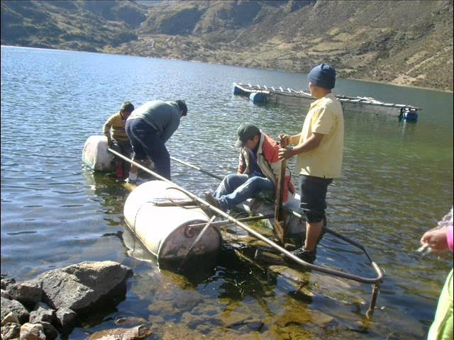
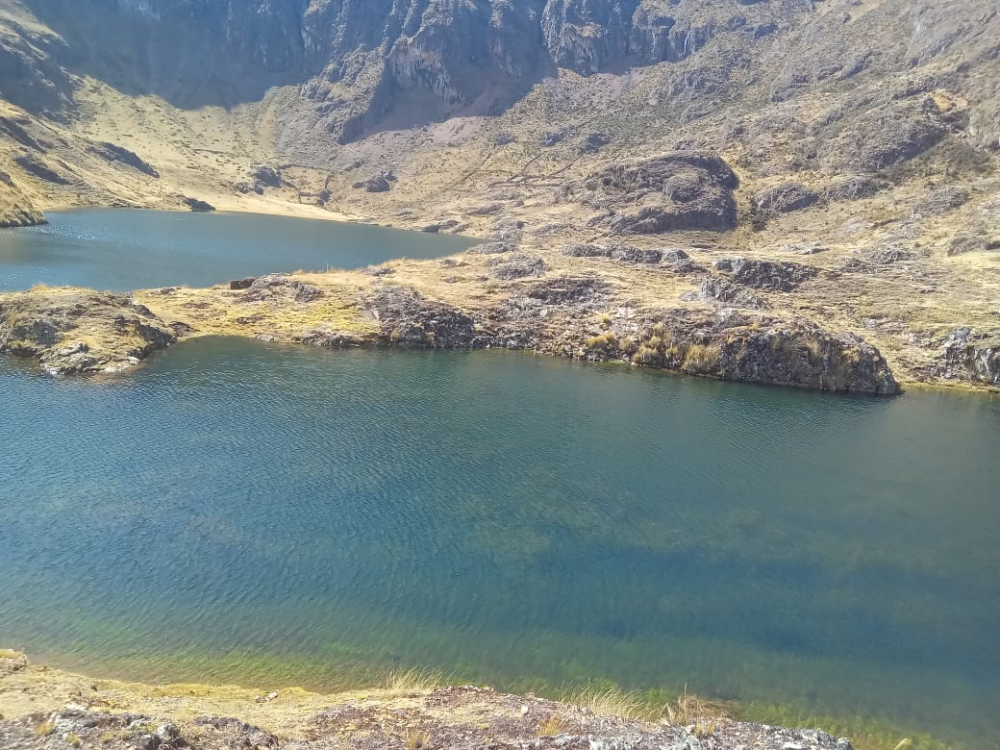
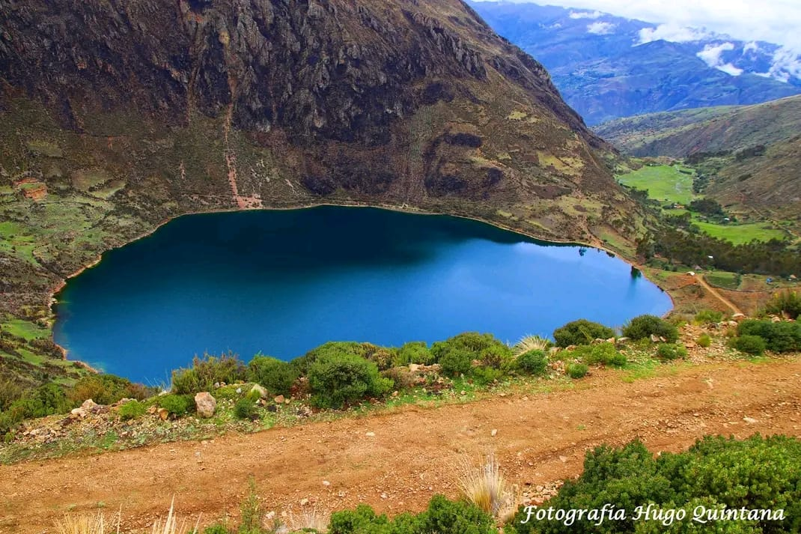

HERMOSA LAGUNA x
La Laguna de Chinchin se encuentra en la provincia de Churcampa, en el departamento de Huancavelica, Perú. Es un lugar de gran belleza natural, caracterizado por sus aguas cristalinas que reflejan el entorno montañoso. Este lago está ubicado a una altitud considerable, lo que le otorga un clima frío y paisajes de puna altoandina, típicos de la región.
Además de ser un destino turístico para aquellos que buscan disfrutar de la naturaleza, l a laguna también tiene un significado cultural y espiritual para las comunidades locales. A menudo se asocian leyendas y mitos con el lugar, y las tradiciones andinas tienen una conexión especial con los cuerpos de agua, a los que consideran sagrados.
Los visitantes suelen ir para realizar caminatas, acampar o simplemente disfrutar de la tranquilidad y el paisaje impresionante que ofrece la laguna. Asimismo, en las cercanías, es posible observar flora y fauna típica de los Andes peruanos, como llamas, alpacas y algunas aves altoandinas.
¡No dejes de Visitar!
Algunas Fotos
- 
- 
- 
-

-